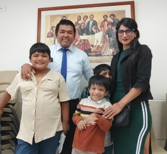
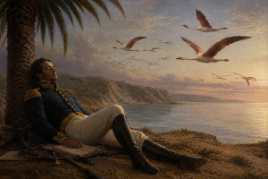

Oscar Alejandro Huanca Maldonado
About me
My name is Oscar. I was born and raised in Pisco, a city located about four hours south of Lima, the capital of Peru. I've worked as an industrial electrician, primarily in the oil and gas sector. I'm happily married to a wonderful woman, with whom I've lived for ten years. We have three beautiful children who motivate me to strive to be better and give them the best.

Pisco, Perú

Peru is a very diverse country in terms of climate, culture, and cuisine. On the Peruvian coast lies the city of Pisco, known as the birthplace of the Peruvian flag. According to history, the liberator Don José de San Martín landed there and, while resting in a palm tree, was inspired by some birds to create the first flag of Peru.